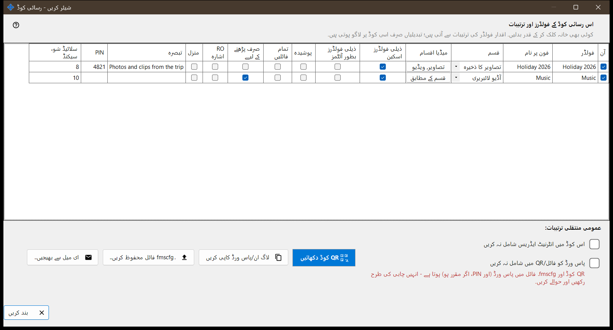
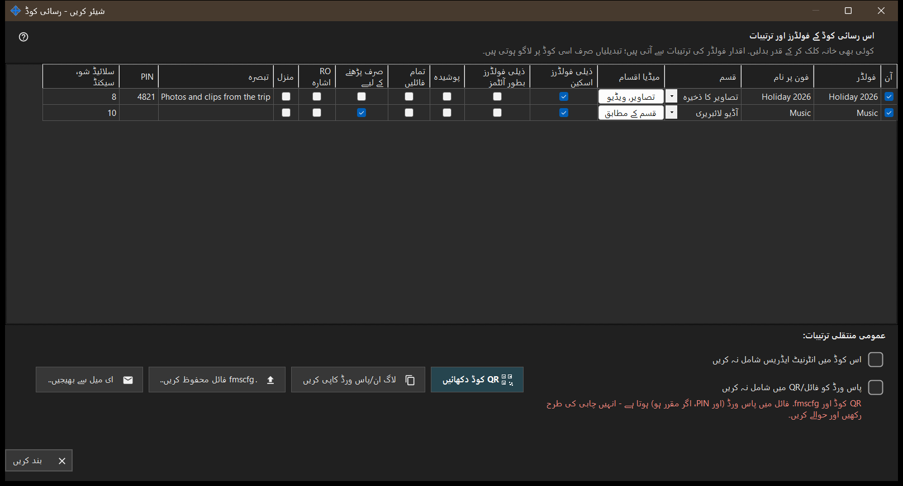

شیئر کریں - رسائی کوڈ
یہ کس مقصد کے لیے ہے
فون کے لیے رسائی کوڈ بناتا ہے: ایک QR کوڈ اور ایک .fmscfg فائل، جن میں پتہ، لاگ ان اور چنے ہوئے فولڈر ہوتے ہیں۔ شیئرنگ چلتے ہوئے یہ مرکزی ونڈو کے شیئر کریں بٹن سے کھلتا ہے، اور کوڈ دینے سے پہلے جانچتا ہے کہ فون واقعی پی سی تک پہنچ سکتا ہے۔


اس ترتیب میں
- جن فولڈرز کو کوڈ میں رکھنا ہے ان پر نشان لگائیں۔
- جدول کا جو خانہ اس کوڈ کے لیے مختلف ہونا چاہیے اسے بدلیں۔
- ضرورت ہو تو اس کوڈ میں انٹرنیٹ ایڈریس شامل نہ کریں یا پاس ورڈ کو فائل/QR میں شامل نہ کریں پر نشان لگائیں۔
- رسائی کی جانچ کا انتظار کریں۔
- QR کوڈ دکھائیں، .fmscfg فائل محفوظ کریں، اسے ای میل سے بھیجیں یا لاگ ان اور پاس ورڈ کاپی کریں۔
عناصر
اس رسائی کوڈ کے فولڈر اور ترتیبات
ہر شیئر کیے گئے فولڈر کی ایک قطار، کالم: آن، فولڈر، فون پر نام، قسم، میڈیا اقسام، ذیلی فولڈرز اسکین کریں، ذیلی فولڈرز بطور آئٹمز، پوشیدہ، صرف پڑھنے کے لیے، RO اشارہ، منزل، تبصرہ اور سلائیڈ شو، سیکنڈ۔ بدلنے کے لیے خانے پر کلک کریں۔ قدریں ہر فولڈر کی اپنی ترتیبات سے شروع ہوتی ہیں اور ترامیم صرف اسی کوڈ پر لاگو ہوتی ہیں۔ صرف پڑھنے کے لیے سرور پر حقیقی تالا ہے؛ RO اشارہ صرف ایپ میں ترمیم کے بٹن چھپاتا ہے۔ منزل فولڈر ہمیشہ قابلِ تحریر ہوتا ہے، اس لیے اس پر صرف پڑھنے کے لیے لاگو نہیں ہوتا۔
مشترکہ منتقلی کی ترتیبات
اس کوڈ میں انٹرنیٹ ایڈریس شامل نہ کریں فون کو صرف مقامی نیٹ ورک سے جوڑتا ہے؛ یہ سرور کو بند نہیں کرتا، اور پوری شیئر کے لیے انٹرنیٹ رسائی مینیجر کی ترتیبات میں بند کی جاتی ہے۔ پاس ورڈ کو فائل/QR میں شامل نہ کریں کوڈ سے پاس ورڈ ہٹا دیتا ہے؛ اسے الگ سے دیں۔ پاس ورڈ کے بغیر کوڈ فون قبول کرے گا یا نہیں، یہ ایپ کے ورژن پر منحصر ہے۔
رسائی کی جانچ
جب تک حالت لی جاتی ہے، ونڈو یہ بتاتی ہے۔ اگر سرور نہیں چل رہا، یا کوئی فولڈر منتخب نہیں، یا کوئی قابلِ استعمال پتہ نہیں، تو ایک اشارہ بتاتا ہے کہ کیا کم ہے۔ جانچ مکمل نہ ہو تو کوڈ اور فائل نہیں دی جاتیں: رسائی دوبارہ جانچیں دبائیں۔
QR کوڈ دکھائیں
QR کوڈ اور .fmscfg فائل فولڈرز تک رسائی کھولتے ہیں اور ان میں پاس ورڈ اور، اگر مقرر ہو، PIN ہوتا ہے - انہیں چابی کی طرح سنبھالیں اور دیں۔ اگر ترتیبات QR کوڈ کے لیے بہت بڑی ہوں تو فائل محفوظ کرکے اسے بھیجیں۔
فائل، ای میل اور لاگ ان
.fmscfg فائل محفوظ کریں.. فائل لکھتا ہے؛ جس فائل سسٹم میں رسائی محدود نہیں کی جا سکتی، یا ایسے فولڈر میں جسے دوسرے بدل سکتے ہیں، وہاں ونڈو انکار کر دیتی ہے کیونکہ فائل میں رسائی کی کلید ہے۔ ای میل سے بھیجیں.. فائل کو ایک نوٹ کے ساتھ منسلک کرتا ہے کہ اسے Android ایپ میں درآمد کریں اور بعد میں حذف کر دیں۔ لاگ ان/پاس ورڈ کاپی کریں دونوں کو کلپ بورڈ پر رکھتا ہے۔
مینیجر کی ترتیبات · SFTP اشتراک کی ترتیبات · ایکسچینج سرور کی ترتیبات